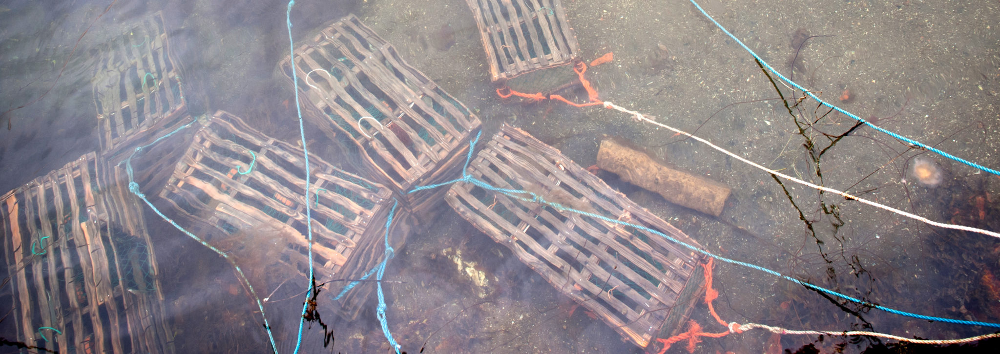
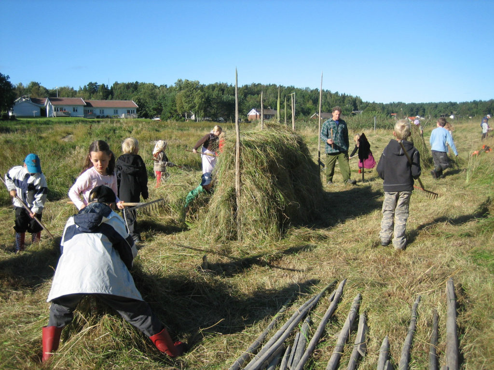
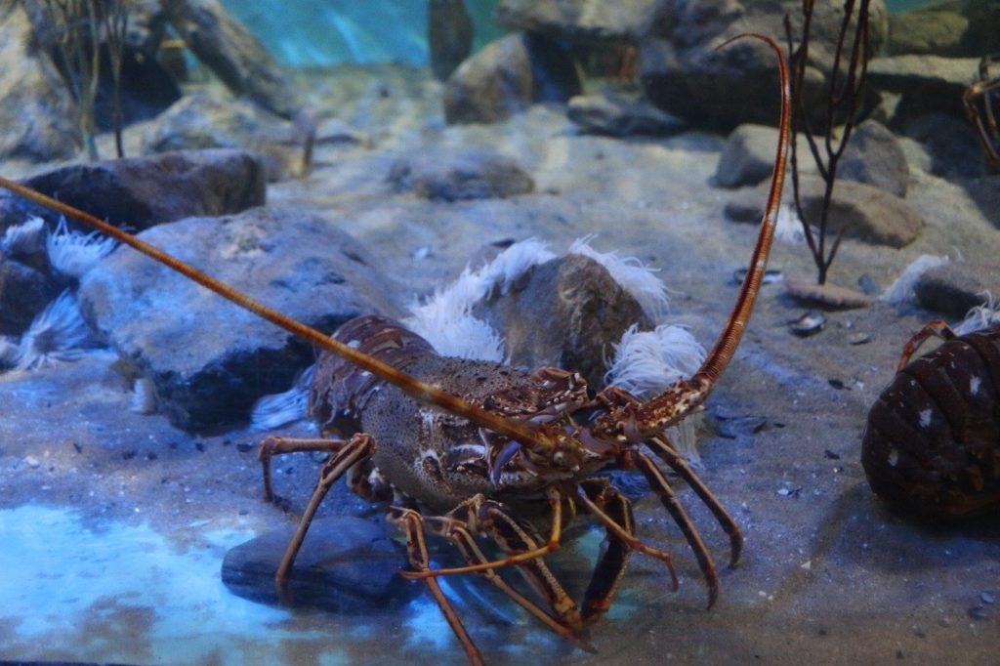

Hummercentrum
Rossö är känt för sin historia som hummercentrum. Tillsammans med Smögen var Rossö på 1920-talet hummerhandelns absoluta centrum.
Rossös historia präglas av havet, fisket, hummerhandeln, jordbruket och människorna som byggt upp ön genom generationer.

Rossö är känt för sin historia som hummercentrum. Tillsammans med Smögen var Rossö på 1920-talet hummerhandelns absoluta centrum.
Berättelser om arbete och liv med ett ben i land och ett i sjön.
På Rossö har man alltid levt med ”ett ben i land och ett i sjön”. Båtbyggeri, tunnbinderi, sillsalteri och stenhuggeri var vid sidan av fisket huvudsakliga sysselsättningar. Fisket kombinerades ofta med jordbruk i liten skala.
Fastigheterna var många och smala för att ge alla chans till ett stycke åkerjord, lite skog för brännvedens skull samt en strandrätt för fisket. På åkern odlades potatis, spannmål och grönsaker för husbehov. På södra Rossö fanns en kvarn där spannmål från öns åkrar maldes till mjöl. Rossö hyste en gång tre pensionat och många drygade, förr som nu, ut sina inkomster genom att hyra ut till badgäster sommartid.

För hundra år sedan bodde mer än 600 personer på Rossö och grannön Rundö. Det mesta kretsade kring fisket. I Rossö hamn låg fiskeskutorna på redden när de inte var på sillfiske utanför Island eller tjänstgjorde i fraktfart.
Doften av saltad fisk kunde ligga tung över Långesand, som är namnet på Rossös största hamn. På stränderna längs sundet mellan Rossö och Rundö låg fram till mitten av 1950-talet hundratals hummersumpar på tork i väntan på hösten och det för ön speciella hummerfisket. Rossö var under lång tid Sveriges näst största lagringsplats för hummer.
På båda sidor av sundet fanns sillsalterier och på Rundö fanns fram till sekelskiftet ett tunnbinderi där trätunnor för lagring av sill och makrill tillverkades. Flera av de unika verktygen finns bevarade i hembygdsföreningens fiskemuseum i Rossö hamn.

Det skyddade läget samt den goda genomströmningen av vatten i sundet mellan Rossö och Rönnö (Rundö) gjorde sundet lämpligt för förvaring av hummer.
Lagring av hummer i större skala började här på 1860-talet. Hummerhandlarna från Rossö köpte upp hummer från fiskare längs kusten. Inköpsturerna gick bland annat till Fjällbacka och Väderöarna i söder samt till Koster och norska Arendal i nordväst.
Fångsterna lagrades i sumpar som tidvis fyllde hela Rossösundet. Som mest fanns här 500 sumpar med vardera cirka 200 humrar. När det var dags för leverans gick man ned för att ”breggle” hummer, det vill säga håva upp hummern ur sumparna.
Leveranserna gick via järnvägsstationen i Överby. Hummern levererades levande i trälådor med is, tidningspapper och träull. Storhetstiden för hummerhandeln på Rossö var över i mitten av 1960-talet, men lagring i mindre skala förekom fram till 1990-talet.

Från tidigt 1920-tal till mitten av 1950-talet hade Rossö en tullstation.
Under 1940-talet fanns en fjärdingsman, alltså polis, stationerad på Rossö.
Under andra världskriget var Rossö under perioder starkt befäst. Rester av luftvärnsfästen finns kvar på Hageberget och Höjdeberget. Bevakningsposter fanns bland annat på Oxefjäll, Kockholmen och Klemensberget.
Följ arbetet med Rossös historia, äldre fotografier, berättelser och lokalt kulturarv.
Rossö hembygdsförening samlar personer med intresse för öns historia och kulturarv.
Rossö hembygdsförening på Facebook
I gruppen delas historiska bilder, berättelser och information om hembygdsföreningens arbete.